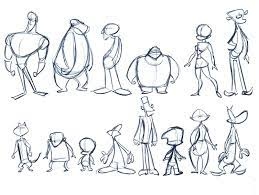

La cinematografía actualmente
Como influye
El cine influye en el mundo interno, ayuda a resolver conflictos, cambiar actitudes, y hábitos que limitan, desarrolla la creatividad, mejora la comunicación y también contribuye a desechar emociones negativas.
Géneros existentes
Los géneros cinematográficos son muchos y muy diversos. Los podemos diferenciar por su estilo, su formato, su audiencia o hasta su época o ambientación.

Géneros cinematográficos por estilo
- Acción. este género prevalecen altas dosis de adrenalina con una buena carga de movimiento, fugas, acrobacias, peleas, guerras, persecuciones y una lucha contra el mal.
- Aventuras. Similares a las de acción, predominan las nuevas experiencias y situaciones.
- Ciencia Ficción. Basados en fenómenos imaginarios, en la ciencia ficción son usuales los extraterrestres, sociedades inventadas, otros planetas…
- Comedia. Diseñadas específicamente para provocar la risa o la alegría entre los espectadores.
- No- Ficción / documental. Este género analiza un hecho o situación real sin ficcionarlo.
- Drama. Los dramas se centran en desarrollar el problema o problemas entre los diferentes protagonistas. Este es quizás uno de los géneros cinematográficos más amplios de la lista. No predominan las aventuras o la acción, aunque pueden aparecer puntualmente Generalmente se basan en desarrollar la interacción y caracteres humanos.
- Fantasía. En ellas se incluyen personajes irreales o totalmente inventados, inexistentes en nuestra realidad. También podemos conocer este género de cine como “fantástico”. No se basa en ideas que puedan llegar a materializarse.
- Musical. Las películas que cortan su desarrollo natural con fragmentos musicales son protagonistas de este género.
- Suspense. Conocido también como intriga, estas películas se desarrollan rápidamente, y todos sus elementos giran entorno un mismo elemento intrigante.
- Terror. Su principal objetivo es causar miedo, horror, incomodidad o preocupación.
Géneros de cine por formato
- Cine Mudo. Las películas que se incluyen en este género cinematográfico no disponen de una grabación de sonido. Solamente están compuestas por imágenes.
- Cinema sonoro. Al contrario que el cine mudo, en este género las películas incorporan una grabación de sonido sincronizada con las imágenes.
- Cine 2D. Cine proyectado en dos dimensiones: altura y fondo.
- Películas 3D. En estas películas se suma el ancho a las otras dimensiones, siendo así una película 3D.
- Animación. Películas que se componen de fotogramas hechos a mano y que, pasados rápidamente uno detrás de otro, producen la ilusión de movimiento o vídeo. Pueden ser hechas a mano (tradicionalmente) o mediante ordenador.
Géneros según ambientación
- Religiosas. Su temática está enfocada a una religión.
- Futuristas. Tienen lugar en épocas futuras, y sus personajes pueden ser realistas o ficticios.
- Policíacas. Suelen tener lugar en una escena del crimen y se centran en resolverlo.
- Crimen. Su foco se posa sobre la vida de los delincuentes o criminales.
- Bélicas. También conocidas por centrarse en conflictos bélicos o guerras.
- Históricas. Se ambientan en épocas determinadas, con recreaciones de personas, hechos, lugares o argumentos.
- Deportivas.
- Western. Famosas por centrarse en el territorio occidental de los Estados Unidos de América.
Que vas a encontrar en nuestra web
Nosotros somos unos fanáticos cinematógrafos, que hemos recopilado, las mejores películas de cada generación, desde los 30's hasta los 00's. Donde hemos incluido, una sinopsis, con la valoración que tiene, el reparto, y donde se pueden ver actualmente.
Actualmente, tenemos subida la información de tres géneros, pero iremos actualizando para completarlos todos, en un futuro no muy lejano. Los géneros que se encuentran son:
-
Terror → En este apartado se encuentra el género, que puede hacer, estremecer, gritar, o dejar sin dormir a mucha gente.

-
Drama → En este apartado se encuentra el género, que puede hacer sentir un vuelco de emociones distintas a la vez, llanto, risa, temor, etc. Es un género, que pasa por muchas faces sentimentales.

-
Animación → En este apartado se encuentra el género, más variado, y con más imaginación de la industria, ya que todo se hace desde la creatividad, son caricaturas creadas a través de dibujos con vida.
